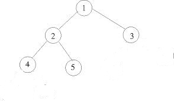

Algorithm
Use a path array path[] to store current root to leaf path. Traverse from root to all leaves in top-down fashion. While traversing, store data of all nodes in current path in array path[]. When we reach a leaf node, print the
path array.

For the above example tree, all root-to-leaf paths are:
1 –> 2 –> 4
1 –> 2 –> 5
1 –> 3
Source Code
#include <iostream >
using namespace std;
struct node
{
int data;
node *left;
node *right;
};
int count1=0;
int count2=0;
node *newnode(int val)
{
node *ptr=new node();
ptr->data=val;
ptr->left=NULL;
ptr->right=NULL;
return(ptr);
}
// Utility that prints out an array on a line.
void printArray(int ints[], int len) {
int i;
for (i=0; i<len ; i++)
{
cout<<ints[i];
}
cout<<endl;
}
void printPath( node* node, int path[], int pathLen)
{
if (node==NULL)
{
return;
}
path[pathLen] = node->data;
pathLen++;
count1++;
// it's a leaf, so print the path that led to here
if (node->left==NULL && node->right==NULL)
{
printArray(path, pathLen);
}
else
{
// otherwise try both subtrees
printPath(node->left, path, pathLen);
printPath(node->right, path, pathLen);
}
count2++;
}
void printPaths(node* node)
{
int path[50];
printPath(node, path, 0);
}
int main()
{
node *root=newnode(1);
root->left=newnode(2);
root->right=newnode(3);
root->left->left=newnode(4);
root->left->right=newnode(5);
printPaths(root);
//cout<<"count1"<<count1<<endl;
//cout<<"count2"<<count2<<endl;
}